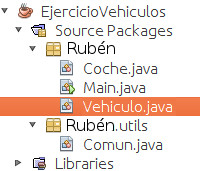

POO en JAVA, ejercicio nivel intermedio 1
Ejercicio que muestra las habilidades adquiridas en la POO y aplica sus directrices.
Jerarquía de clases utilizada

Dependencias: clase “utils” propia.
\*
\* EJERCICIO JAVA(Módulo 5)
\* ------------------------------
\* VEHICULOS - (Main)
\*
package ruben;
import ruben.utils.*;
public class Main
{
public static void main(String\[\] args)
{
int opcion;
String marca;
String modelo;
int potencia;
// Se introduce la marca, el modelo y la potencia al iniciar el programa
// para pasarselo al constructor de vehiculo marca = "Seat"; modelo =
// "Ibiza"; potencia = 120; Coche coche = new Coche(marca, modelo,
// potencia);
do {
opcion = mostrarMenu();
ejecutarAccion(coche, opcion);
} while (opcion != 4);
}
public static int mostrarMenu()
{
int opcion;
System.out.println("\\n### Menu ###\\n");
System.out.println("1) Ver ficha");
System.out.println("2) Comprar");
System.out.println("3) Proxima revision");
System.out.println("4) Salir\\n");
opcion = Comun.leerEntero("Seleccione una opcion: ");
return opcion;
}
private static void ejecutarAccion(Coche coche, int opc)
{
String nombre;
int revision;
try {
switch (opc) {
case 1: // Mostrar ficha del empleado coche.verFicha(); break;
case 2: // Modificar los datos del empleado nombre =
// Comun.leerCadena("Introduzca el nombre del nuevo propietario:
// "); coche.comprar(nombre); break;
case 3:
revision =
Comun.leerEntero("Introduzca el anio de la proxima revision: ");
coche.revisar(revision);
break;
default:
System.out.println("Opción no válida.");
break;
}
} catch (Exception e) {
System.out.println(e.toString());
}
}
}
\*
\* Clase VEHICULO \*/ package anfora;
\*
\*
\*
\* @author ruben
*/
public class Vehiculo {
private String marca; private String modelo; public int anioRevision;
// Constructor Vehiculo(String marca, String modelo) { this.marca = marca; this.modelo = modelo; anioRevision = -1;
}
// Muestra la ficha del vehÃculo, marca, modelo y año public void verFicha() { System.out.println("\\n\\n------ Ficha del Vehiculo ------\\n"); System.out.println(" Marca: " + marca); System.out.println(" Modelo: " + modelo);
if (anioRevision == -1) // Comprobamos que el año no sea -1 { System.out.println(" Anio revision: " + "pendiente de informar"); } else { System.out.println(" Anio revision: " + anioRevision); }
}
// Recibe como parámetro el año de la próxima revisión de ITV public void revisar(int anioRevision) { this.anioRevision = anioRevision;
System.out.println("\\nAnio que le corresponde la revision: " + anioRevision); }
}
/\* \* Clase COCHE que hereda de la clase VEHICULO \*/ package ruben;
/\*\* \* \* @author ruben \*/ public class Coche extends Vehiculo {
private String propietario; private int potencia;
// Constructor Coche(String marca, String modelo, int potencia) { //Llama al constructo de la clase base. super(marca, modelo); propietario = ""; this.potencia = potencia;
}
// Muestra la ficha de la clase base, propietario y potencia @Override public void verFicha() { super.verFicha();
if (propietario == "") { System.out.println(" Propietario: " + "No indicado"); } else { System.out.println(" Propietario: " + propietario); }
System.out.println(" Potencia: " + potencia + " CV"); System.out.println("\\n----------------------------------\\n");
}
// Recibe el nombre del propietario public void comprar(String nombre) { this.propietario = nombre; }
// Sobreescribe el método de la clase base. // Los coches que ya han tenido alguna revisión, deben tener la próxima antes de dos años. @Override public void revisar(int anioRevision) { super.revisar(anioRevision);
if (anioRevision > -1) { anioRevision += 2; }
}
}